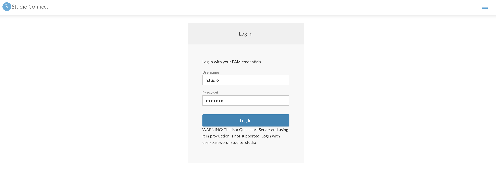
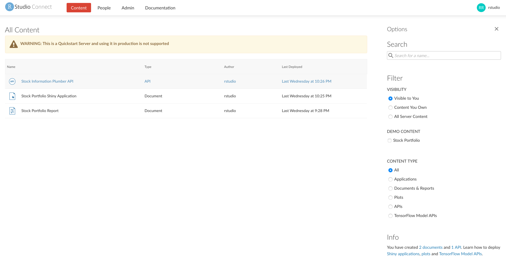
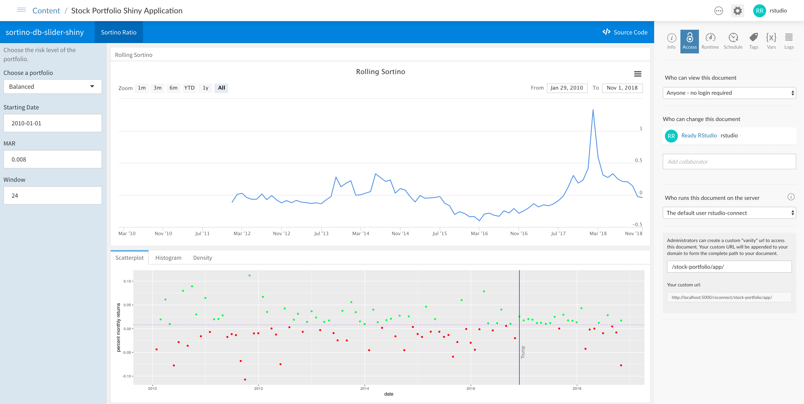
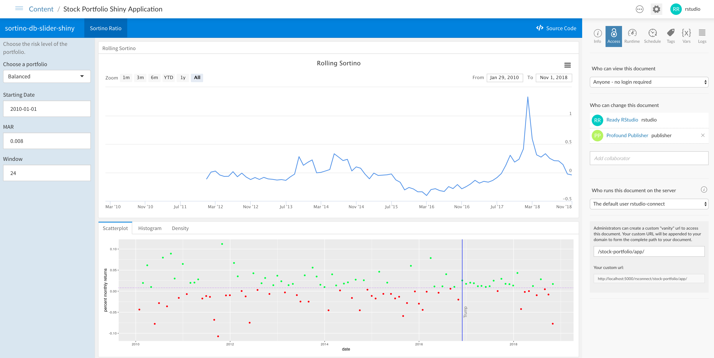
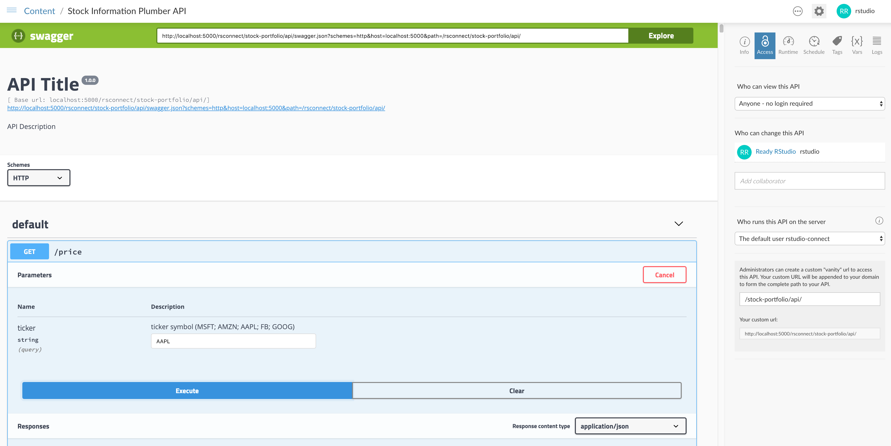
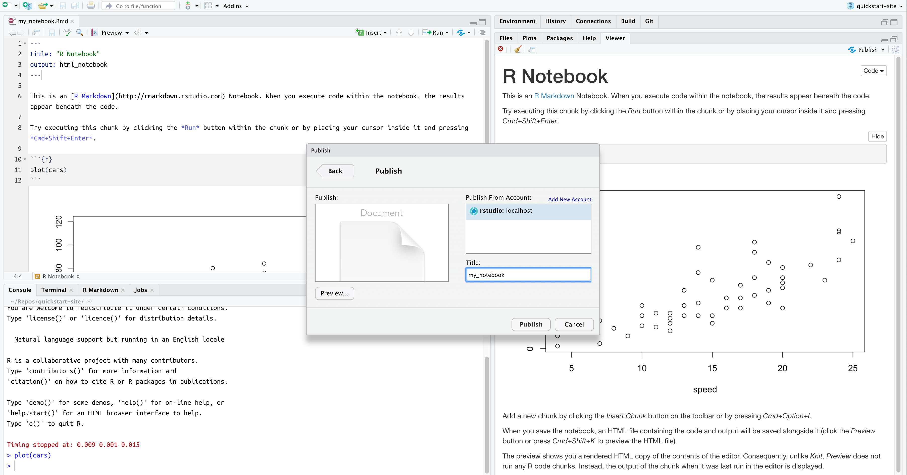
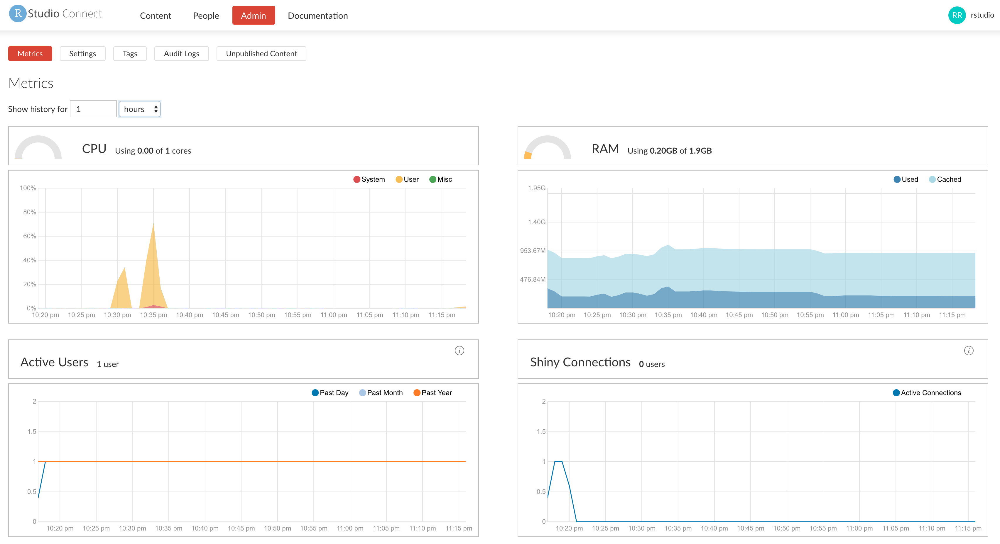
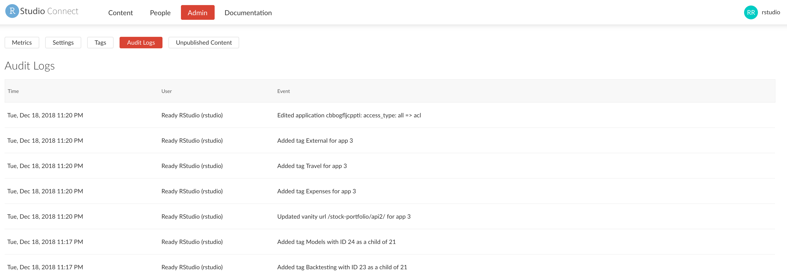
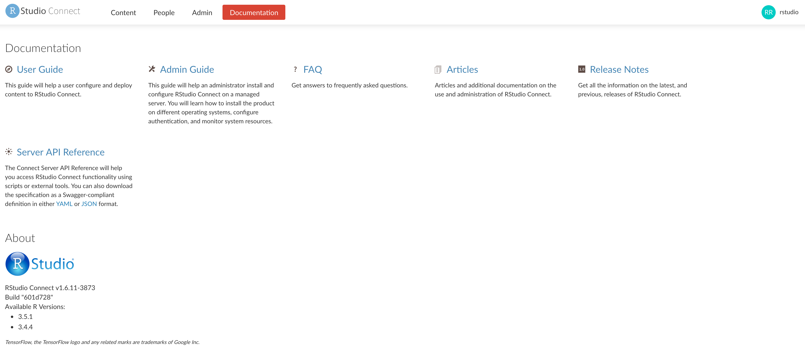
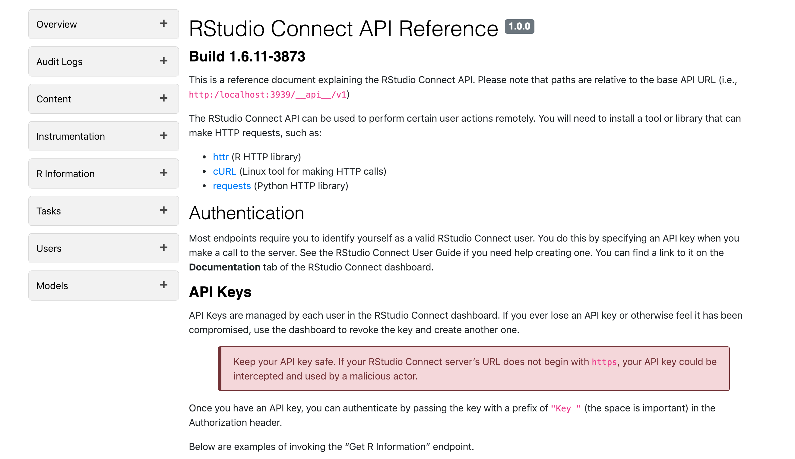

In the following sections, we’ll explore the full functionality of RStudio Connect.
You can follow through the tasks in sequential order, starting with user tasks and continuing to administrator tasks. Or, you can jump directly to a task and perform the steps described in that section.
First, we’ll log in and view the data products that have been published to RStudio Connect.
Navigate to the RStudio Connect interface.

Click the Log In link on the top right corner of the Welcome to RStudio Connect page.
Log in with the username rstudio and password rstudio.
Once you are logged in to RStudio Connect, you’ll see a landing page with a list of all of the content that has been published:

The tasks in this section would be performed by a user in RStudio Connect.
Click on the published document called Stock Portfolio Shiny Application, which will open the published Shiny app in the content portion of the screen along with controls for the application on the right side of the screen.

Explore the Shiny application by:
On the right side of the screen, you’ll see an Access pane that defines which types of users can access the published version of the Shiny app and who can make changes to the document.
Let’s add a collaborator to this Shiny app.
Access pane, add the user publisher as a collaborator by typing their username in the field under Who can change this document.publisher user to add them as a collaborator to this project.
Now, the publisher user has the ability to manage and update this application.
From the RStudio Connect landing page, click on the published API called Stock Information Plumber API, which will open the published API and show the endpoints that are available. In this published API, there are two endpoints that can be queried.
Let’s query the /price endpoint to get historical prices for a given ticker symbol.
/price bar near the bottom of the screen to expand the details of the endpoint.Try it Out button to show the fields for the inputs to the API endpoint.AAPL in the ticker field.
The results of the query appear in the response body field, which shows the historical returned as a JSON object. This API could be queried by other published assets or consumed by systems external to RStudio Connect using API tokens.
From the RStudio Connect landing page, click on the published document called Stock Portfolio Report, which will open the published report. This parameterized document contains multiple inputs that can be varied, then the report can be re-run and the output can be saved as new versions of the report.
Let’s change some of the parameters and send a copy of the report via email.
Input drawer on the left side of the report.Start Date to 2010-02-01.portfolio field to aggressive_portfolio_returns.Run Report button.Save button, enter a name for the new report, and click OK.Send button to send a copy of the report via email.Navigate to the webmail interface in the Quickstart. You’l see an email that contains the latest results from the report along with attached versions of the report in HTML and spreadsheet format.
Note that you can also schedule reports to be saved or sent by email to a list of users on a recurring basis using the Schedule tab in the project settings.
You can configure the RStudio IDE on your local machine with the capability to publish projects to the instance of RStudio Connect in the Quickstart. Once configured, you can use push-button publishing to deploy your own applications to RStudio Connect.
Publish button to prepare the project for publishing.Next in the dialog to continue to the step for configuring the RStudio Connect URL.http://localhost:5000/rsconnect.Connect to R browser window that opens, click the Connect button and login with the username rstudio and password rstudio.Connect Account button to complete the authentication process.Now that we’ve added an account for RStudio Connect to your RStudio IDE, we can continue to the steps to publish the R Notebook.
Publish to Server dialog, select the R Notebook that you want to publish. You can also select any files that are required for the notebook or project to run on RStudio Connect.
After a few moments, you’ll be directed to the published version of your project on RStudio Connect.
The tasks in this section would be performed by an administrator user in RStudio Connect.
From the RStudio Connect landing page, click on the People item in the top navigation bar.
You’ll see a list of all users who have registered accounts in RStudio Connect.
You can click on a particular user to view a list of content published by that user, and you have the ability to edit fields or lock access to their user account.
From the RStudio Connect landing page, click on the Admin item in the top navigation bar.
You’ll see an administrator dashboard with information about the CPU and RAM usage on RStudio Connect, the number of active users and Shiny connections, and a list of processes that are running alongside published content.

You can change the range to view RStudio Connect activity in terms of recent hours, days, weeks, and more.
From the RStudio Connect landing page, click on the Admin item in the top navigation bar, then click the Audit Logs item to view a history of the activity that has been performed on RStudio Connect.

From the RStudio Connect landing page, click on the Documentation item in the top navigation bar. You can view a list of available R versions that have been configured with RStudio Connect.

Click on the Server API Reference link to view documentation related to various APIs that can be used to programmatically obtain audit logs, create published projects, gather statistics for published apps, and more.
